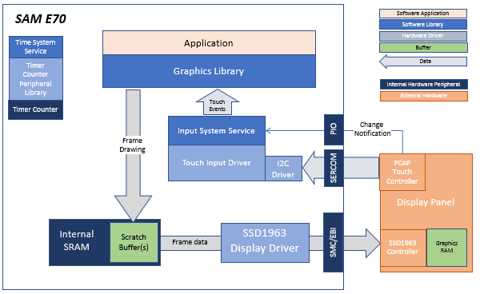
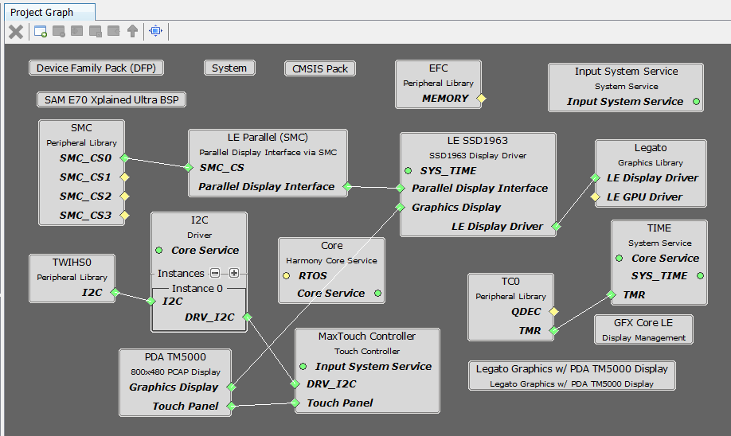
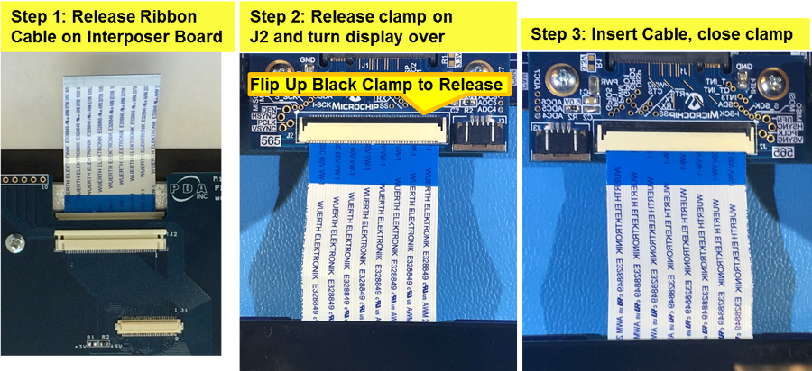

|
MPLAB® Harmony Graphics Suite
|
|
MPLAB® Harmony Graphics Suite
|

The architecture for this configuration is the SAM E70 Xplained Ultra + 4.3” WQVGA with SSD1963 GFX Interface Card interface through the 16-bit 8080 mode.
The SSD1963 is connected to the SAM E70 thru the SMC peripheral and GPIOs which are used to send 16-bit parallel data/commands and to bit-bang control signals to the SSD1963 controller, respectively. The frame buffer is stored externally in the SSD1963 controller.
Input on the display panel is received thru the PCAP capacitive touch controller, which sends a notification to the Touch Input Driver. The Touch Input Driver reads the touch information over I2C and sends the touch event to the Graphics Library thru the Input System Service.

In this configuration, the SSD1963 display controller is used to send the display data and timing to a WQVGA display. The SSD1963 is connected to the SAM E70 thru the SMC peripheral and GPIOs which are used to send 16-bit parallel data/commands and to bit-bang control signals to the SSD1963 controller, respectively. The frame buffer is stored externally in the SSD1963 controller.
The parent directory for this application is gfx/apps/legato_quickstart. To build this application, use MPLAB X IDE open the gfx/apps/legato_quickstart/firmware/legato_adv_e70_xu_tm5000_ssd1963.X project file.
The following table lists configuration properties:
| Project Name | BSP Used | Graphics Template Used | Description |
|---|---|---|---|
| legato_adv_e70_xu_tm5000_ssd1963.X | sam_e70_xplained_ultra | Legato Graphics w/ PDA TM4301B Display | sam_e70_xplained_ultra with SSD1963 GFX Interface and 5� WVGA PCAP Touch display |
**_NOTE:_** This application may contain custom code that is marked by the comments // START OF CUSTOM CODE ... and // END OF CUSTOM CODE. When using the MPLAB Harmony Configurator to regenerate the application code, use the "ALL" merging strategy and do not remove or replace the custom code.
The final setup should be:

Configuring the 4.3� WQVGA Display requires disconnecting the ribbon cable that connects the display to the interposer board.

First, release the ribbon cable from the interposer board. Next, release the black clamp on the E70�s J2 connector and turn the display over. Finally, insert the ribbon cable into J2 and close the clamp

The board and display are powered by a Micro B � USB A cable from PC to the �Debug USB� port on the E70 board. The ICD4 Debugger and ICD4/PICKit4 Adapter Board are connected as shown above.
The application first boots to an animated Splash Screen. Once the Splash Screen animation completes, the application boots to a Main Screen.
When at rest, the demo will cycle through idle sprite animations. Various areas of the screen are touch interactive

If initiated to run, the lamb sprite will run to the end of the screen, and play out a sequence of smacking into a wall, hurt and dizzy animations.

Tap Jump and the lamb will play out a jump animation.

Info Screen describes the features supported by this demo

 1.8.18
1.8.18